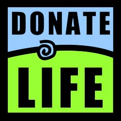

Donate Life UGA
Donate Life UGA is a college branch of the national organization Donate Life.
This organization promotes after-death organ donation and educates people on its benefits.
| Exec Board |
|
Jessica McDaniel
|
President
|
|
Kellie Walls
|
Vice President
|
|
Maddie Marsh
|
Philanthrophy Chair
|
|
Mimi Ackleh
|
Education Chair
|
|
Meghan Barber
|
Greek Life Chair
|
|
Joni Marie Patterson
|
PR Chair
|
Mission Statement:
Our club wishes to increase the number of donors on the registry. We want to promote awareness about
organ donation and destroy its "weird" stigma. By creating a comfortable atmosphere where anyone can
ask questions, we hope to give people the opportunity to consider becoming an organ donor, regardless
of their background.
With only 33% of Americans signed up to be organ donors, Donate Life plays an important role in
spreading awareness. Our goal is to increase the number of donors to over 50%! The more people we sign up,
the more potential matches are out there for people in desperate need of a life-saving organ.
At our bi-annual donor drives in Tate, we sign up an average of 100 people to be organ donors. That means,
since our start in Fall 2013, we have signed up around 800 people. Although we are a small club, our impact
is immeasurable.
Reasons to become a donor:
-
Every 10 minutes, another person is added to the transplant waiting list
-
22 people die every day waiting for an organ
-
8,000 people die every year in the U.S. because they never received a donation
-
82% of people on the waiting list need a kidney
-
1 person can save 8 lives if they donate their organs
-
683,000 transplant surgeries have been done in the past 30 years
To sign up to be an organ donor today, click here:
Donor Registration